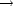

A parser is declared with the parser keyword. The declaration may have a list of base classes from which the parser will inherit. Then follows grammar rules and code sections.
TPG parsers can inherit from other Python classes.
TPG parsers always inherits from the tpg.base.ToyParser class which defines the common behaviour of every parsers.
The user can add more base classes to TPG parsers by adding a class list to the parser definition as in figure 7.1.
Rule declarations have two parts. The left side declares the symbol associated to the rule, its attributes and its return value. The right side describes the decomposition of the rule. Both parts of the declaration are separated with an arrow () and the declaration ends with a ;.
The symbol defined by the rule as well as the symbols that appear in the rule can have attributes and return values. The attribute list - if any - is given as an object list enclosed in left and right angles. The return value - if any - is extracted by the infix / operator. See figure 7.2 for example.
|
Each time a terminal symbol is encountered in a rule, the parser compares it to the current token in the token list. If it is different the parser backtracks.
You can start the parser from the axiom or from any other non terminal symbol. When the parser can not parse the whole token list a tpg.ParserError is raised. The value returned by the parser is the return value of the parsed symbol.
The axiom is a special non terminal symbol named START. Parsers are callable objects. When an instance of a parser is called, the START rule is parsed. The first argument of the call is the string to parse. The other arguments of the call are given to the START symbol.
This allows to simply write x=calc("1+1") to parse and compute an expression if calc is an instance of an expression parser.
It’s also possible to start parsing from any other non terminal symbol. TPG parsers have a method named parse. The first argument is the name of the symbol to start from. The second argument is the string to parse. The other arguments are given to the specified symbol.
For example to start parsing a Factor you can write:
f=calc.parse('Factor', "2*3")
|
To parse a non terminal symbol in a rule, TPG call the rule corresponding to the symbol.
Sequences in grammar rules describe in which order symbols should appear in the input string. For example the sequence A B recognizes an A followed by a B. Sequences can be empty.
For example to say that a sum is a term plus another term you can write:
Sum -> Term '+' Term ;
|
The cut idiom is drawn from the Prolog cut (!). When the ! operator is encountered it is ignored. When TPG backtracks on a cut, a syntax error is raised so as to cut other possible alternatives.
For example, the rule R -> a ! b c | d ; will raise a ParserError exception if it recognizes an a not followed by a b and a c, without trying to parse a d.
The cut also helps TPG to report errors. In the previous example, TPG will report an error after a instead of backtracking to the topmost rule.
Alternatives in grammar rules describe several possible decompositions of a symbol. The infix pipe operator (|) is used to separate alternatives. A | B recognizes either an A or a B. If both A and B can be matched only the first match is considered. So the order of alternatives is very important. If an alternative has an empty choice, it must be the last.
For example to say that an atom is an integer or an expression in paranthesis you can write:
Atom -> integer | '\(' Expr '\)' ;
|
Repetitions in grammar rules describe how many times an expression should be matched.
Repetitions are greedy. Repetitions are translated into Python loops. Thus whatever the length of the repetitions, Python stack will not overflow.
The figure 7.3 lists the different structures in increasing precedence order. To override the default precedence you can group expressions with parenthesis.
|
Grammar rules can contain actions and Python code. Actions are handled by TPG and Python code is copied verbatim into the generated code.
An abstract syntax tree (AST) is an abstract representation of the structure of the input. A node of an AST is a Python object (there is no constraint about its class). AST nodes are completely defined by the user.
The figure 7.4 shows a node symbolizing a couple.
AST can be created by the infix = operator (see figure 7.11.1).
When parsing lists for example it is useful to save all the items of the list. The infix - operator call the add method of an AST (see figure 7.5). This method is defined by the user. TPG won’t check that the class actually has an add method.
|
TPG can extract a portion of the input string. The idea is to put marks while parsing and then extract the text between the two marks. This extracts the whole text between the marks, including the tokens defined as separators.
TPG knows some basics about Python objects. An object in TPG is a Python object using a special syntax. The use of parenthesis has been rejected because it would have introduced ambiguities in the TPG grammar. Parenthesis have been replaced with left and right angles (< and >). Appart from this particularity, TPG object syntax is a subset of the Python syntax.
An object can be:
No mystery about identifiers except that TPG identifier definition includes true identifiers and integers.
I_m_an_Identifier_13
1975 |
A TPG string is a subset of Python strings. TPG doesn’t accept triple quoted strings. If you absolutely need triple quoted strings you can encapsulate them in Python code objects.
"I'm a string"
'I\'m a string too" |
Argument list is a comma separated list of objects. Remember that arguments are enclosed in left and right angles.
<object1, object2, object3>
|
Argument lists and tuples have the same syntax except from the possibility to have default arguments, argument lists and argument dictionnaries as arguments as in Python.
RULE<arg1, arg2=18, arg3=None, *other_args, **keywords> -> ;
|
A Python code object is a piece of Python code in double curly brackets. Python code used in an object expression must have only one line.
{{ dict([ (x,x**2) for x in range(100) ]) # Python embeded in TPG }}
|
Text extraction is done by the infix .. operator. Marks can be put in the input string by the prefix @ operator.
@beginning
... @end ... my_string = beginning .. end |
Exactly as in Python.
my_object.my_attribute
|
Exactly as in Python except from the use of left and right angle instead of parenthesis.
my_object.my_method<arg1, arg2>
my_function<arg1, arg2> my_function_without_arg<> |
As in Python.
my_list[object]
my_list[object1:object2] my_list[:object2] my_list[object1:] my_list[:] |
TPG parsers also have some interesting methods that can be used in Python code.
The lineno method returns the line number of the current token. If the first parameter is a mark (see 7.11.2) the method returns the line number of the token following the mark.
The user can force the parser to backtrack in rule actions. The parser classes have a WrongMatch method for that purpose (see figure 7.6).
|
Parsers have another useful method named check (see figure 7.7). This method checks a condition. If this condition is false then WrongMatch if called in order to backtrack.
|
A shortcut for the check method is the check keyword followed by the condition to check (see figure 7.8).
|
The user can force the parser to stop and raise an exception. The parser classes have a error method for that purpose (see figure 7.9). This method raises a SemanticError.
|
A shortcut for the error method is the error keyword followed by the object to give to the SemanticError exception (see figure 7.10).
|